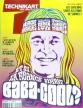
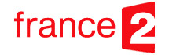
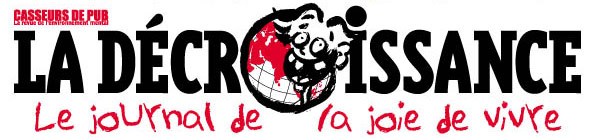
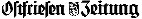
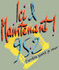

Depuis le début de notre voyage, la presse s'est fait l'echo de notre aventure ...
_______________________________________________________________________
Décembre 2005
Canal +
Nous ne sommes pas de anges
Super Chronique de Jean-François Kervéan sur le livre

Septembre 2005
Technikart
Quelques citations et un profil du livre dans le dossier sur les nouveaux babs... hi hi hi.
Octobre 2005
Phosphore
Une bonne critique du livre.
Septembre 2005
RTL Toulon
Une autre interview dans la région d'origine de Mathieu.
Septembre 2005
Cherie FM Toulon
Une petite interview sur l'antenne locale de Mathieu...
Juillet 2005
La Presse
Un de nos tout premiers articles venant du froid...
Juin 2005
Nouvelles Clés
Un article dithyrambique de Patrice van Eersel, dont on peut vous garantir qu'il n'est pas un membre de notre famille...

Juin 2005
France2 - On vous dit pourquoi...
Interview par Jérome Bonaldi dans l'émission "On vous dit pourquoi" qui est consacrée à l'écotourisme.
Mai 2005
Journal
Interview comme invité du jour.

Juin 2005
Journal la Décroissance
Un article plutôt hargneux sur nous (le premier !) nous reprochant d'être dangereux, riches (ah bon ?), et blancs (désolés) mais je vous rassure le bouquin n'est pas évoqué, seulement nos photos de voyage où il faut bien l'avouer nous n'avons pas l'air de grand chose... Le Journal de la "Joie de vivre" qui nous reproche de nous marrer, on aura tout vu !
Juin 2005
L'expansion
Livre sélectionné dans la rubrique "à lire" : "Idéaux en action - Un tour du monde des entrepreneurs qui, chacun dans leur secteur, agissent concrètement pour rendre le monde meilleur."
10 Mai 2005
Libération
Livre sélectionné par Denis Delbecq : "Enfin de bonnes raisons d'être optimiste".
9 Mai 2005
La Tribune
Article décrivant l'arrivée des "alter entrepreneurs"...
6 Mai 2005
RMC
Mathieu est invité de Jean-Jacques Bourdin le matin. " Un livre formidable". Merci Jean-Jacques.
5 Mai 2005
Radio Canada
Hélène Raymond reçoit Mathieu (en duplex de Paris...) pour son émission "D'un soleil à l'autre".
4 Mai 2005
Le Progrès de Lyon
Annick Stevenson recommande la lecture de notre ouvrage "Tour du Monde passionnant !".
2 Mai 2005
Europe 1
Mathieu est l'invité de Jacques Pradel et Sylvain a été contacté en duplex depuis la Suisse...
29 Avril 2005
Direct 8
Mathieu est l'invité de l'émission Complément Terre.
19 Avril 2005
TV5
Mathieu est l'invité du jour et interviewé par Xavier Lambrechts.
17 Avril 2005
Europe 1
Sylvain et Mathieu sont les invités de Dominique Souchier dans l'émission "C'est arrivé demain."
16 Avril 2005
France Inter
Sylvain et Mathieu sont les invités de Denis Cheyssoux dans l'émission CO2 mon amour.
28 Octobre 2004
Nouvel Observateur
Un article intitulé "Nouveaux Entrepreneurs, sauvez le Monde, c'est possible !" avec une jolie photo de nous avec Maximilien de BeCitizen en train de faire du vélo dans nos bureaux (non nous ne sommes pas ridicules...).
10 Octobre 2004
France Inter
Sylvain participe à l'émission "Un dimanche par Hasard" animée par Kriss.
Juin 2004
france5.fr
Lors d'une émission de Arrêts sur Image consacré aux voyages utiles et au livre Africa Trek des Poussin, notre site est cité.
16 Juin 2004
Le Figaro
Notre aventure est évoquée dans un article sur l'internet et le développement durable de la rubrique Multimédia du quotidien.
Juin 2004
Econosoc.be
Notre site est sélectionné sur ce portail de l'économie solidaire.
Printemps 2004
Ethicity.net
Notre site est sélectionné dans la rubrique on a aimé (tant mieux !) de ce webzine de la consommation responsable.
Mai 2004
Abm.fr
Notre site est mis en avant sur la première page de ce portail des Aventuriers du Bout du Monde.
Février 2004
grainesdechangement.com
Lors de la première édition de cette lettre de l'information positive, notre site est mis en avant.
Novembre 2003
Geomagazine.fr
Notre site est sélectionné dans les carnets de Route de geomagazine.fr
Octobre 2003
Routard.com
"Un voyage exceptionnel" sélectionné
dans la rubrique des carnets de route.
Septembre 2003
A360.org
"Un pretexte pour des rencontres exceptionnelles"
sélectionné comme site du mois en Octobre
Septembre 2003
L'internaute
"Le site le plus humaniste" sur
une sélection de huit sites de voyageurs.

Juillet 2003
Ostfriesland Zeitung
Un article du jounal local d'Emden, en Allemagne. Si vous parlez allemand c'est mieux.
Juin 2003
Tourdumonde.be
Sélectionné site du mois en Juin sur cet excellent site portail de nombreuses évasions.
Juin 2003
Courrier de l'Orne
Un article complet et bien sympathique, où la vraie star était sans aucun doute cocotte.
